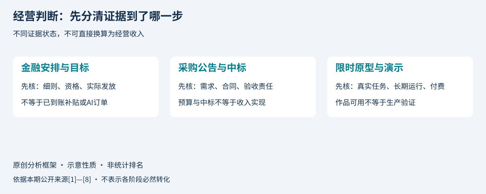

本期范围与证据口径
北京时间2026年11月15日。实际检索截止：08:41:15（UTC 00:41:15）。优先窗口为11月14日08:41:15至11月15日08:41:15，扩展窗口为11月12日08:41:15至11月15日08:41:15。本期5条，1条过去24小时、4条扩展至72小时；政策转载和聚合页面重采均不作为新事件。
已回看最近7天高管简报及今日独立AI日报候选。Cursor与M365恢复进展留在独立日报，不再展开；社科院大学本期补充另一项数智化设备中标，不重复昨日算力服务器采购。本期正式要闻均为国内事件；全球新线索未达到重要性与去重门槛，广东未取得足够可读新原文，不为地域配额凑数。
摘要为来源事实或有明确归属的报道；重要性、影响与建议为编辑分析。官方来源标签不意味着每个附件已读、产品已实测或订单已履约。全部图解为原创，不使用第三方新闻照片。
01｜湖北科技金融新举措：200亿元政策资金不是AI补贴或订单
事件及最早已核验发布：11月13日发布会、湖北日报15:28:07；武汉市政府11月14日08:46转载长江日报。按11月13日首次公开归入72小时扩展，不以转载充当新政策。
摘要： 湖北介绍科技金融12条举措，在光谷建设科技金融生态圈及服务中心，统筹不少于200亿元央行再贷款、再贴现政策资金，力争三年内撬动地方法人银行科技贷款余额突破2000亿元。另推进“先补后股”，单个科创项目最高支持300万元。前两项是金融支持安排与目标，不是AI专项采购或已经到账的补贴。[1][2]
为什么重要： 对早期技术和成果转化项目，资金工具、试点服务与支持条件比宣传中的总规模更影响可获得性。
业务影响： 科技金融线上平台包括需求归集、智能匹配和政策服务，但公开报道没有相应软件采购预算。资金支持可能改善企业融资条件，不能直接等同客户AI支出增加。
建议： 对具体项目分别核实适用主体、支持方式、申报细则和实际发放；“先补后股”应核查后续转股条件，不能当成无附带条件补助。
证据与限制： 已读湖北日报发布会全文及武汉市政府转载全文；后者称七部门联合印发，但本期未取得带文号的正式签章文件、生效日期或申报细则，不给出申请资格已确定的判断。[1][2]
02｜北京新增窗口：智源180万元大模型项目招标，先读需求再判断交付边界
首次公告：11月13日，页面未列时分；72小时扩展。文件获取截止11月19日17:00，投标递交截止12月3日13:30（按公告境内招标时间）。
摘要： 北京智源人工智能研究院“大模型训练生产与开放项目”公开招标，含税最高限价180万元，不分标段，接受联合体但不接受分包或转包。文件须在线购买，投标现场递交。服务地点由中标方提供，服务期限及详细范围需看用户需求书，公开公告不足以判断GPU配置、训练规模或模型交付指标。[3]
为什么重要： 这是明确的新采购窗口，但项目名称不能代替需求清单。不同交付范围对应的成本、知识产权和验收责任差别很大。
业务影响： 联合体与禁止分包并存，意味着合作方式应在投标阶段明确；不能中标后再假定可以转交核心工作。
建议： 先核对用户需求书、交付物、数据和模型权利、验收标准，再决定是否投入。公告文件价500元，线上下载另列200元服务费，均有不退限制；本文不代为购买或报名。
证据与限制： 已通过公开HTTP请求完整读取招标代理官网HTML；搜索阅读器不可达。未购买或读取第五章用户需求书，未据此推算利润与所需算力。[3]
03｜湖北两类询比：1260万元智算资源与121.9万元运维开发分开评估
两份公告首次发布均为11月13日，72小时扩展；同一采购人湖北大数据集团算力科技有限公司，不能据此认定属于同一终端项目或联合合同。
摘要： 该公司分别采购智算资源服务和运维管理系统开发：前者预算1260万元、单价最高35万元/月，服务36个月；后者预算及最高限价121.9万元，45个日历天内开发交付达到验收条件。资源服务需有效IDC业务许可证，软件开发聚焦界面、报表、大屏和接口适配，两者均不接受联合体。[4][5]
为什么重要： 同一运营主体同时采购资源供给与软件交付，反映两种不同的履约能力，不应全部包装成新增GPU购买。
业务影响： 资源服务从采购方确认《算力服务开通确认书》起算36个月，含7×24运行维护、安全和技术支持；4套智算云主机不等于4张GPU。软件开发需要另核既有接口和验收范围，不与资源预算简单合并成确定收入。
建议： 两项均在11月19日24:00前获取文件。资源项目SLZB-26CG-106/HBDSJ-202611FW-013001于11月20日09:30截止；开发项目SLZB-26CG-114/HBDSJ-202611FW-013002于同日14:30截止，均为北京时间。先核资格、供给成本或集成范围，再决定参与。
证据与限制： 已读取两份采购平台HTTP原始公告；HTTPS版本访问受限，不冒称已从HTTPS核验。第三章完整采购需求需注册、平台会员、手机CA及每包500元信息费后获取，本期未读。可读HTTP原文：资源公告：http://www.hbdsjygzc.com/jyxx/004001/20261113/3f217b60-3d11-4251-9eb5-e1a29297d147.html；开发公告：http://www.hbdsjygzc.com/jyxx/004001/20261113/b4fcf0a3-e33c-49ab-afc4-9e36057bea62.html。预算、最高限价均非成交金额。

04｜北京数智化设备中标：新增证据是应用接口，不是重复计算服务器订单
原招标公告10月15日；本次中标结果首次公开11月13日，72小时扩展。与11月14日简报所报同一平台算力服务器有关联，但本条为另一采购项目GC-HGX261205，不是昨日项目的新进展。[6][10]
摘要： 社科院大学公布科教融合智能育人平台二期数智化设备中标，预算480万元，鼎欣汇智科技中标339.9万元。主要标的包括借还咨询导览机器人、4台AI算力平台服务器和扫描机器人，分别涉及图书馆系统对接、Agent构建及超融合适配、文献归档与模型语料对接，均列3年原厂质保。[6]
为什么重要： 本次新增采购证据将设备、软件与应用接口放在一份标的表中，提示交付不能止于设备上架。
业务影响： 同类教育AI项目需要跨设备、知识库、语料和既有业务系统协同；硬件数量或中标金额不足以证明应用效果。此项目没有新的开放投标窗口。
建议： 研究类似方案时，把接口联通、内容质量、权限、运行维护与质保边界写成可检验项目，不默认原厂质保覆盖全部业务集成。
证据与限制： 已读采购人官网完整公告及主要标的表；未读完整招标附件、签署合同或验收记录。产品能力属于公告表述，非本期独立性能测试；未将两项采购金额累加当作新增市场规模。[6] 原招标公告链接[10]本轮访问403，未据其补充具体采购要求。
05｜怀柔实际开赛：48小时原型挑战，适合观察需求与验收方法
事件：11月14日开赛；“北京怀柔”在新京号发布于11月14日22:06，过去24小时。科学城管委会的赛道事前介绍仅作背景。
摘要： 据“北京怀柔”开赛报道，怀客松于11月14日启动具身智能、OPC模式创新和AIGC三类挑战。OPC赛道要求先梳理客户、痛点、交付与成本，再开发可嵌入业务流程、产出可验收成果的AI数字员工。48小时挑战证明的是限时原型与新增产出要求，不代表作品已生产部署或形成付费订单。[7][8]
为什么重要： 对管理层，更值得观察的是从真实任务和验收条件出发的筛选方式，而非赛事规模或演示效果。
业务影响： 赛事可以提供初步团队和方案线索，但可靠性、持续运营成本和客户付费仍需后续验证；不得将主办方资源对接计划写成已落实业务。
建议： 对参赛或演示方案先问任务由谁验收、失败如何处理、人工成本是否计入，再安排更长周期的真实场景验证。
证据与限制： 已读取新京号完整HTML，页面明确由机构上传，非新京报记者独立报道；并读科学城管委会事前说明。AI for Science专项赛另有赛程安排，未将其写成与三类挑战同日实际开赛，未取得比赛结果。[7][8]
存量事项
据11月14日简报援引长江大学原公告，89万元AI教学实验室项目11月16日至20日获取文件、11月27日09:00响应截止（北京时间）。本期未重新核实是否有澄清或延期，参与前须核对采购方及交易平台；此提醒不计入新要闻。[9]
今日判断
湖北资金政策提供的是融资与成果转化支持路径，具体申请及兑现仍要看细则，不能先计为AI收入。智源招标与湖北两类询比有可定位的参与窗口，但资格、付费文件和履约成本应先于销售预测。社科院大学新增数智设备公告提示，应用接口和数据交付应与硬件同时验收。怀客松的限时原型机制可以借鉴为需求筛选方法，但真正的商业验证还需要持续运行与客户付费证据。